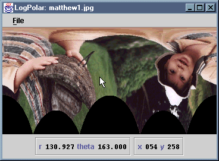

The LogPolar application warps an image to simulate the
distortions inherent in log-polar sensor arrays. As the cursor moves over
the image, the polar and cartesian coordinates of the underlying pixel are
continually updated.
The application consists of source files LogPolar.java and
LogPolarInfo.java. The latter is a class representing the
information panel displayed below the warped image. Corresponding
.class files are provided, and these class files have been
packaged as a single JAR file, LogPolar.jar.
To install this application, copy the JAR file somewhere, then copy
either the MS-DOS batch file LogPolar.bat or the
bash shell script LogPolar.sh to an appropriate
location and edit it to reflect the new location of the JAR file.